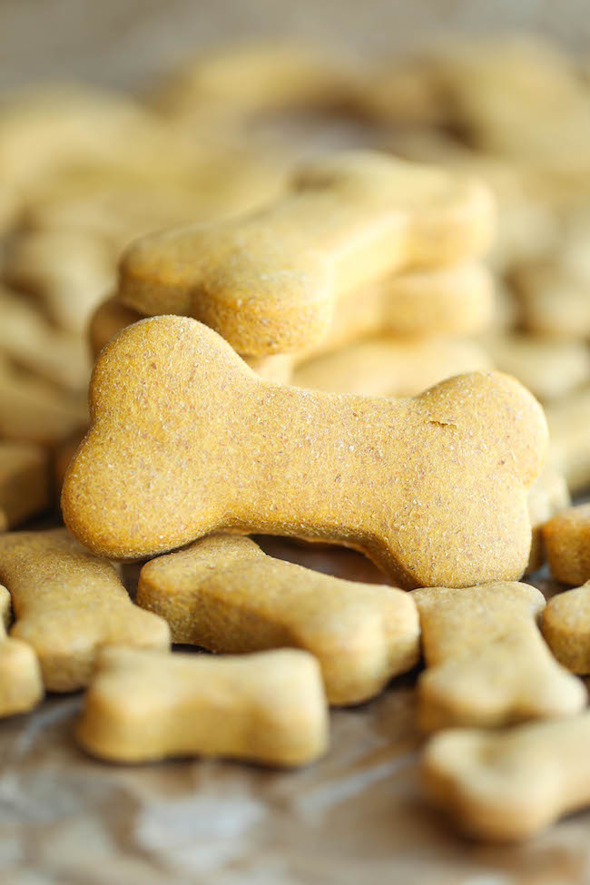

Looking for a nice, simple dog treat recipe to try? These quick & easy peanut butter dog treats are a favorite of mine. They’re easy to make and quick to bake, and as an added bonus they’ll make your kitchen smell awesome.
And since my dog is a fan of anything with peanut butter they always get a big seal of approval from her.
Ingredients
- 2 cups flour
- 1/2 cup creamy peanut butter*
- 2 eggs
- 1/4 cup water
Note: You can use other kinds of peanut butter such as chunky, but if you do you’ll probably need to add more water to the mixture in order to make it into workable dough.
Steps
- Preheat your oven to 350 F.
- Mix together your flour, peanut butter & eggs in a large bowl until slightly combined.
- Add in a little bit of water (approximately one Tbsp at a time) until the mixture becomes wet enough to roll out as dough.
- Roll out your dough & cut out your favorite shapes with some cookie cutters.
- Place your treats onto your baking sheet & cook for about 15 minutes. For a little bit of crunch I like to take mine out once the bottoms start to darken.